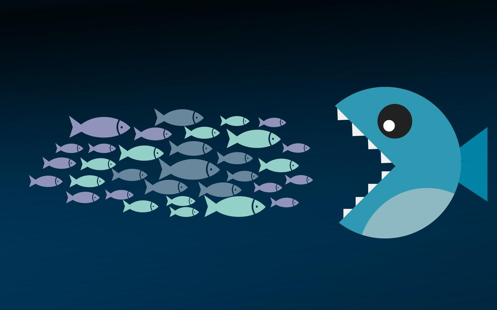

What To Do About Big Business?
02 Jul 2018 · 12 min read
topics: balancedemocracysystemic

Has business gotten too big?
Rather than trying to answer this question directly, let’s start by reviewing the fundamental architecture of all modern societies.
The Basic Architecture
Let’s start with the major components.
Competing Interests
Any modern society has to concern itself with maintaining a measured balance between a number of competing interests. At the highest level, these interests might be summarized as:
-
Consumers – Those who make use of good and services;
-
Labor – The people who work for a regular income;
-
Business (aka Capital) – The companies that produce goods and services, as well as the owners that invest in them, and earn income (or suffer losses) from those investments;
-
Community – A group that works to pool and share commonly needed resources such as roads, schools and parks.
Conflict and Competition
While these interests may at time form cooperative relationships, it is also clear that these interests will often be at odds with one another. As just three examples:
-
Labor might wish to increase wages, whereas business might wish to lower them, in order to increase profits;
-
Labor might wish for higher wages, whereas consumers might like to see lower ones, to make goods and services more affordable;
-
Business might wish for unfettered access to natural resources, whereas a community might wish to preserve some of those resources to ensure that all community members can enjoy equal access to them.
The Need for Balance
While these interests may at times be sympathetic to one another, it is also clear that each of them, if unchecked, can be tempted to excess. Again, let me offer a few examples:
-
Business leaders may become robber barons, taking excessive profits for themselves, and impoverishing workers and communities;
-
Labor may demand higher levels of wages and benefits than can be sustained, driving companies out of business, or driving jobs overseas, into cheaper labor markets;
-
Consumer protections may go too far, placing excessive and unreasonable restrictions on business, driving up costs and hampering innovation;
-
Communities may reserve an excess of resources that are only directly used by a few, thus depriving society as a whole of the economic value that could be produced if business were to gain access to those resources.
Rights and Principles
The US Declaration of Independence famously held certain truths to be self-evident, and certain rights to be unalienable. And yet, when it comes to balancing these four competing interests for the good of society, there are no simple and obvious rights or principles that enjoy an equally secure footing.
Which is not to say that we cannot find any sage guidance. Here, for example, are some words from Abraham Lincoln:
Labor is prior to, and independent of, capital. Capital is only the fruit of labor, and could never have existed if labor had not first existed. Labor is the superior of capital, and deserves much the higher consideration.
And here are a few words from Winston Churchill:
Liberalism is not Socialism, and never will be. There is a great gulf fixed. It is not a gulf of method, it is a gulf of principle. Socialism seeks to pull down wealth. Liberalism seeks to raise up poverty. Socialism would destroy private interests; Liberalism would preserve private interests in the only way in which they can be safely and justly preserved, namely by reconciling them with public right. Socialism would kill enterprise; Liberalism would rescue enterprise from the trammels of privilege and preference. Socialism exalts the rule; Liberalism exalts the man. Socialism attacks capital; Liberalism attacks monopoly.
And here a narrative from Tim O’Reilly:
Walter Reuther, the pioneer UAW organizer, told the story of a conversation with a Ford executive who was showing Reuther his new factory robots. “How are you going to collect union dues from all these machines?” he asked. Reuther said he replied, “You know, that is not what’s bothering me. I’m troubled by the problem of how to sell automobiles to them.”
Again, though, while this is all helpful advice, there are no absolutes here that can be defended with the same fervor our American forefathers called upon to justify their independence.
Instead, then, what we need are a series of reasoned, well-informed judgment calls.
The Need for Responsible Governance
Since conflicts between these competing interests will naturally arise, and since some sort of reasonable balance between these interests must be maintained for the good of society, a fifth player must be introduced: a relatively disinterested societal Governing Body that can arbitrate these disputes as they emerge.
Natural Advantages and Disadvantages
Note that each of these four interests has natural advantages or disadvantages when it comes to exerting its influence.
Consumers are the most numerous of the groups – after all, we are all consumers – and so has the advantage of sheer numbers.
Labor typically has many more members than business, and so can theoretically overpower business interests. On the other hand, labor needs business to supply jobs, and laborers cannot easily relocate, so they are generally dependent on local places of employment for their survival.
Communities represent all of their members, and so have a theoretical advantage in terms of numbers. On the other hand, each separate community program often seems to directly benefit only a limited subset of the community, and so it is easy for community members to wonder why all have to contribute when only a few seem to benefit.
When we finally come to consider business, even though it has the disadvantage in terms of overall population size, it has all of the following advantages:
- Organization – Whereas consumers, workers and communities must all build organizations in order to exert their influence in a concerted fashion, businesses are already organized into large hierarchies, and can simply use their existing structures to plan and execute influence campaigns.
- Resources – Any sustainable business must have an income that exceeds its expenses, and thus generates a surplus that can be strategically deployed as business leaders see fit – including spending those resources to project business influence on society at large.
- Persuasion – Any business has to persuade others to purchase its products, and so businesses can easily turn these readily available skills of persuasion to influence members of society.
- Efficiency – In any capitalist economy, successful businesses must relentlessly focus on efficiency in order to remain competitive and stay in business; consumers, workers and communities are typically not subject to the same pressures, at least to the same degree, and therefore tend to be more prone to complacency, indecision and bureaucratic inefficiencies.
- Mobility – Businesses are not as geographically constrained as workers, consumers or communities, and so it is easier for them to walk away from deals they dislike. And, since other parties know this is the case, mere threats to walk away from unfavorable deals give them a great deal of power as well.
Modern Times
Everything I’ve said so far has been true for any modern society of the last hundred years or so.
So what’s new?
Globalization of markets has increased industry consolidation and made businesses larger than ever. Apple, Alphabet/Google, Microsoft, Exxon Mobil, Amazon, Facebook, Johnson & Johnson, General Electric, Boeing – these are all sprawling multinational companies with suppliers, employees and customers all over the planet.
This has been good for consumers, with international competition and economies of scale keeping prices low, and international markets providing broad consumer choice.
At the same time, it’s made governance harder, as a complicated web of authorities from different states and different localities now has to try to maintain this critical balance between competing interests.
These changes have also made it more difficult for workers, since they’ve had a hard time keeping up with ever-changing skill requirements, and cannot practically follow the jobs they’re qualified for, as businesses move these at will around their global chessboard.
Communities have also had a harder time competing, since they are at the mercy of the rising and falling economic fates of their constituents. And as environmental issues become more global, and less local, existing community organizations are even less well equipped to defend communal interests on such a vast scale.
The bottom line here is that recent developments have generally played into the hands of business, leaving labor and communities in particular at an even greater disadvantage than before.
A Recent Concrete Example
A recent story from Seattle provides a very concrete example of the forces I’m describing.
If you’re not familiar with the series of events, here it is in a nutshell.
- Like many booming West Coast cities, Seattle is struggling with an epidemic of homelessness.
- In order to raise money to help get homeless residents off the streets and into safer facilities, the left-leaning City Council and Mayor proposed a new “head tax” on large employers within Seattle.
- Amazon immediately countered by ordering a halt to construction planning for a new downtown office tower, thus mobilizing construction workers to protest the proposal.
- After a week of high-stakes negotiations, the City Council and Mayor reduced the amount of the tax, and then unanimously approved the revised proposal.
- Amazon then issued a statement threatening to move jobs out of the city in order to avoid the tax.
- Amazon and other Seattle businesses began organizing a drive to overturn the new tax with a referendum on the November ballot.
- With other local initiatives suffering from large cost overruns, government officials were hard-pressed to credibly explain how they would use the new funding in an efficient and effective manner.
- Although homelessness is a problem that affects all Seattle residents in one way or another, it began to appear that the city’s leaders were willing to inflict hardship on all Seattle businesses and residents in order to directly benefit only a small percentage of the community.
- The Mayor and Council members found the tides of public opinion rapidly turning against them.
- Less than a month after voting unanimously to impose the new head tax, the City Council quickly called a meeting to repeal that same tax, and voted to ditch it by a 7-2 vote, with the Mayor’s blessing.
- The City Council and Mayor are now trying, not only to figure out what to do about homelessness, but how to salvage their credibility with both residents and business leaders.
So there you have it. With better resources, better organization, better mobility, and more practiced powers of persuasion, business easily out-maneuvers the local governing body in order to get its way and maintain the status quo, leaving the community with the same intractable problem that it started with.
Now none of this is to say that Amazon or other Seattle businesses are evil, or that the proposed, passed and now-repealed head tax was the right way to deal with the community problem. My point, rather, is to point out that the playing field is not level, but rather tilted strongly in favor of business, no matter what the problem or what the proposal.
The example I just cited is one that took place recently in one of the most liberal and progressive cities in the country.
If we look at the US on the national level, of course, this imbalance in favor of business is even more pronounced. Trump and Republicans and the courts are consistently favoring big business with judicial decisions, with tax reforms, and with cutbacks in protections for consumers and the environment. Their rationale for all of this is an ideology based on the idea that, when business wins, we all win. However, as I have argued above – and as history has repeatedly shown – the overall health of society as a whole is much more dependent on a healthy balance between competing interests, rather than just giving business everything it wants and then waiting patiently for the benefits to trickle down to the rest of us.
So What To Do About Big Business?
So now let’s return to our opening question. Has business gotten too big? In terms of size and influence, I contend that indeed it has.
So what do we do about it?
In our current political climate, a number of points seem clear.
1) We have to rely on our legislative bodies to change the laws to restore an equitable balance.
We can no longer safely depend on the whims of judicial interpretation or executive orders to maintain the reasonable balance we need.
2) Working top-down would be nice, if we could do it.
Reshaping international and national law reduces the ability of business to simply move its operations from one location to another, and to play these locations against each other.
However, since the largest governmental bodies – the European Union and the United States – are now made up of very diverse sorts of regional constituencies, it is increasingly difficult to reach accord at these high levels.
3) We must be better organized.
Businesses are already well-organized to defend their interests, and they will not readily yield to a disorganized rabble when it comes to their vital concerns.
4) We must remember that balance is the goal.
Newton’s third law of motion tells us that “For every action, there is an equal and opposite reaction.” We might say, with comparable accuracy, that every historical imbalance seems to eventually generate an opposing movement whose strength matches the intensity of the original imbalance. But we need to stay focused on restoring a healthy balance, not tipping things over in the opposite direction.
5) There is no single magic “right answer” for restoring balance.
Increasing tax on businesses? Free college education for all? Free healthcare for all? A minimum guaranteed salary for all citizens? Forcing large monopolies to break up into smaller companies? Increasing the minimum wage? All of these proposals have pros and cons, but none of these can be anointed as the one right way to restore balance.
6) A coalition of large cities might be an effective place to start.
If the cities currently favored by the big tech companies were to put together some reasonable approaches that they could all agree to, then that might be one way to amass enough coordinated power to achieve greater leverage when attempting to deal with the biggest businesses.
Thanks for reading! If you’d like a convenient short URL to link to this piece, you can use pract.org/s/wdabb.html. Or feel free to simply share this piece using one of the social media buttons below!